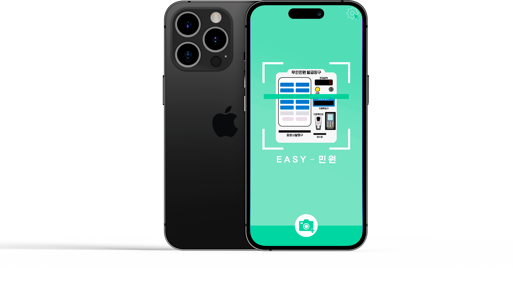
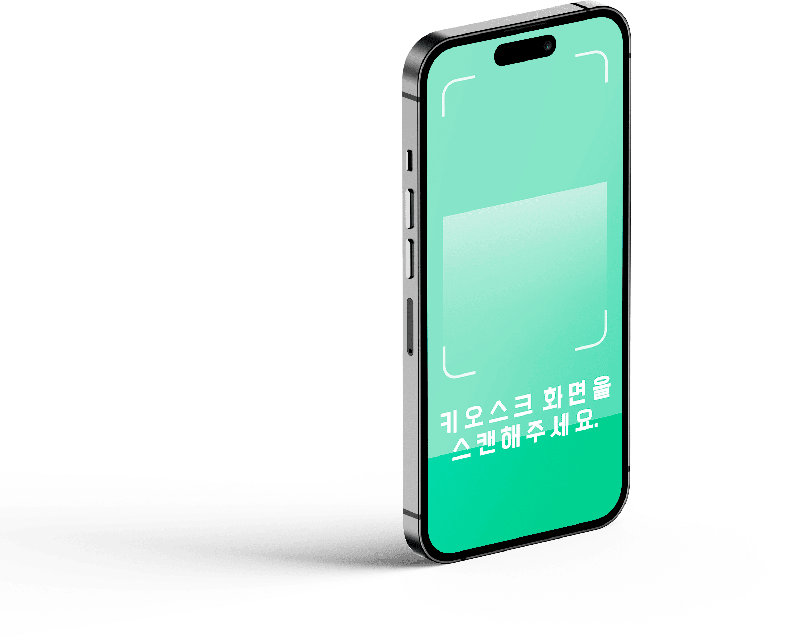
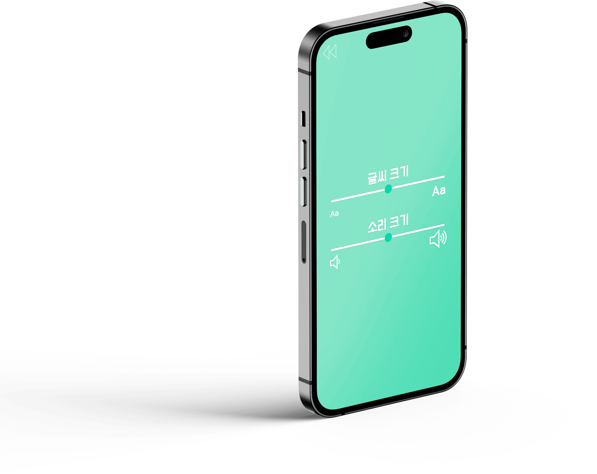
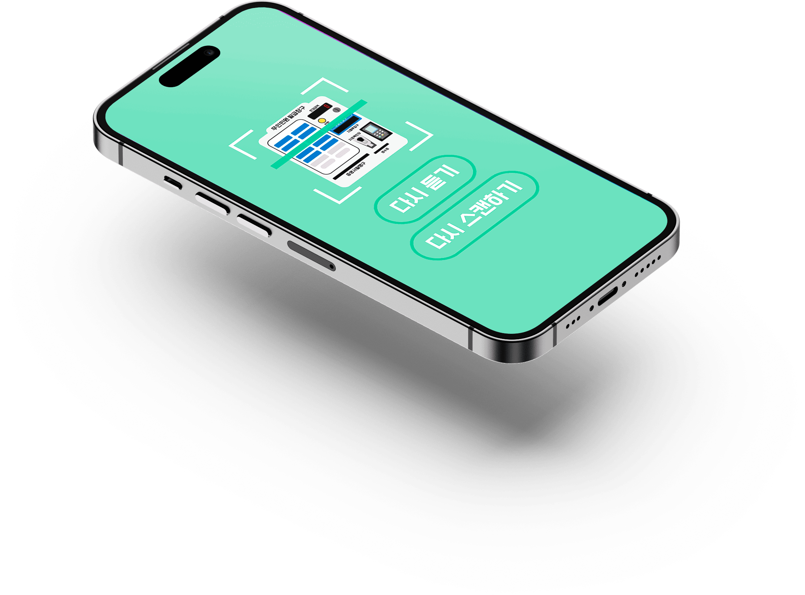

2024 한신 AI·SW 페스티벌 개발 일반 부문
디지털 소외 계층의 키오스크 접근성 강화를 위한
OCR 및 AI 기반 안내 앱 연구
디지털 소외 계층의
키오스크 이용 문제 분석
키오스크 이용 실태 및
선행 연구 조사
OCR · AI 기반의
키오스크 가이드 아이디어 제안
사용자 플로우 및
핵심 기능 기획
접근성을 고려한
인터페이스 설계
공모전 발표 자료 제작 및
공모전 개발 논문 작성
⊙ 디지털 소외 계층의 키오스크 이용 문제를 발견하고 아이디어 도출부터
서비스 기획, UI · UX 디자인, 발표 자료 제작까지 프로젝트의 주요 과정에 참여
⊙ 논문 작성에도 일부 기여하며 프로젝트 결과를 정리
주문 음성 · 텍스트 입력
메뉴 · 옵션 AI 분석
키오스크 화면 OCR 인식
버튼 객체 자동 탐지 및
주문 버튼 자동 매칭
단계별 주문 가이드 제공
접근성 기반 UI 지원


